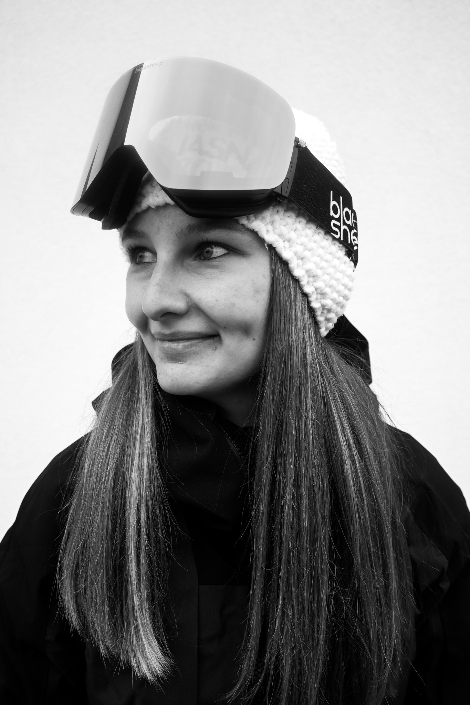
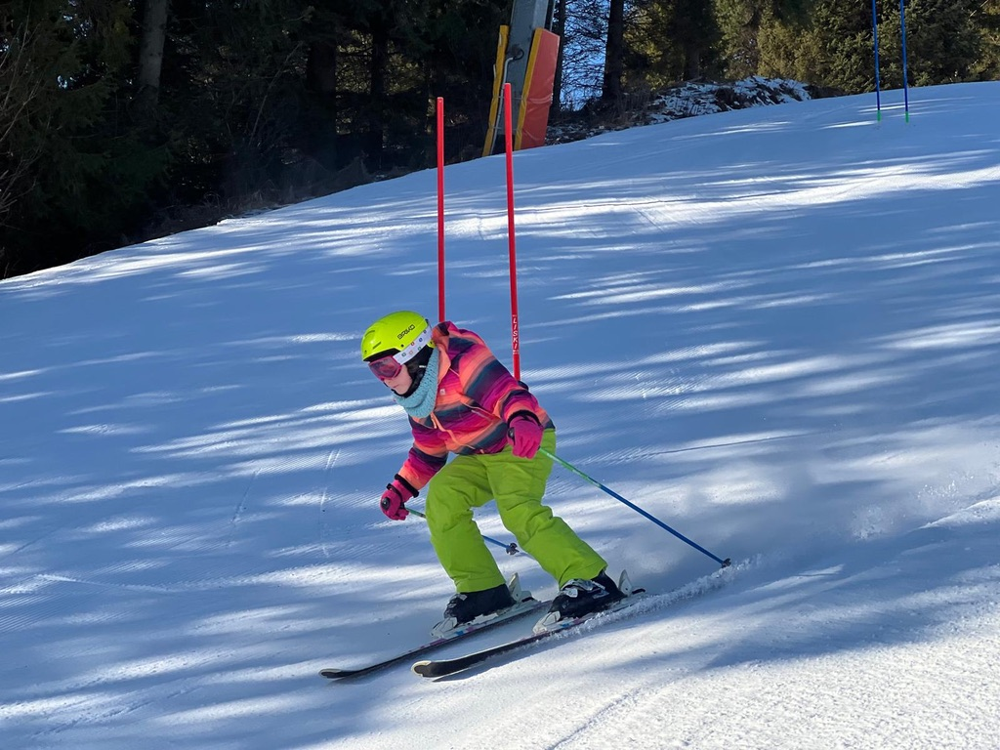
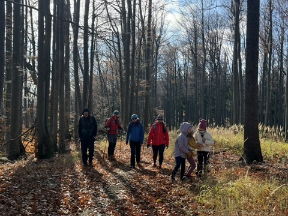
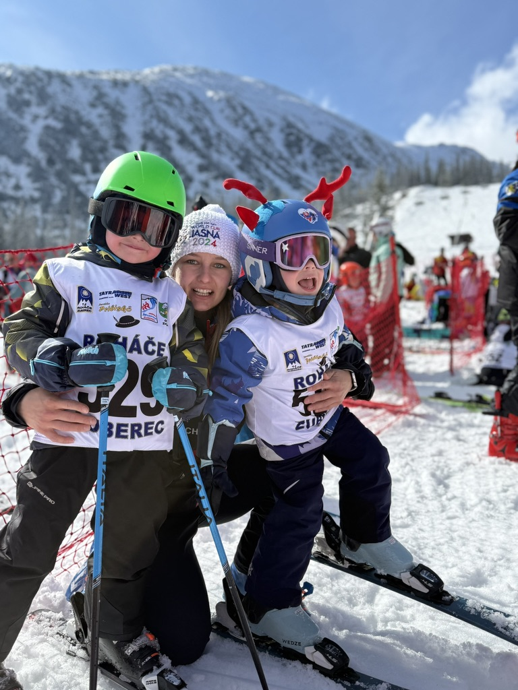

⛷️
Lyžiarske zručnosti
Postupne budujeme techniku, sebavedomie a bezpečné návyky na snehu.
Budujeme radosť z pohybu, istotu na lyžiach a partiu, do ktorej sa deti tešia. Pre deti približne od 5 do 10 rokov.
Chceme, aby deti športovali s radosťou, rozvíjali svoje schopnosti a vytvárali si priateľstvá. Záleží nám aj na dobrej partii rodičov.
Postupne budujeme techniku, sebavedomie a bezpečné návyky na snehu.
Rovnováha, koordinácia, obratnosť a kondícia sú základom zdravého športového rozvoja.
Deti sa učia spolupracovať, podporovať sa a užívať si spoločné športové zážitky.
Štandardne trénujeme dvakrát týždenne. Presný rozvrh a lokality doplníme podľa aktuálnej sezóny.
Hry, koordinácia, sila, rovnováha a všestranné pohybové aktivity.
Pravidelné tréningy na svahu, rozvoj techniky a športovej istoty.
Oblastné preteky a spoločné sústredenia vrátane plánovaného výjazdu do Kreischbergu.
Aktuálne dni, časy a miesta tréningov vám radi upresníme. Kontaktujte nás.

Veríme v povzbudivý prístup, primerané výzvy a individuálny rozvoj. Spoznajte ľudí, ktorí s deťmi trávia čas na tréningoch aj výjazdoch.
Skutočné momenty z tréningov, svahov a spoločných zážitkov.



Rodičia majú vedieť vopred, koľko času a financií šport vyžaduje. Preto jasne oddeľujeme základné tréningy od výjazdov a ďalších nákladov.
Výjazdy a sústredenia: doprava, ubytovanie, skipasy a náklady na trénerov sa riešia osobitne podľa konkrétnej akcie. Náklady na trénerov sa rozpočítavajú medzi zúčastnené trénujúce deti.
Aktuálnu výšku členského poplatku a podmienky vám radi vysvetlíme.
Radi vám povieme viac o tréningoch, dostupnej kapacite a nákladoch na sezónu.
Opýtať sa na členstvoOdpovede na najčastejšie otázky pred prvým tréningom aj počas sezóny.
Primárne pre deti vo veku približne 5 až 10 rokov z Banskej Bystrice a okolia. Zaradenie konkrétneho dieťaťa potvrdí trénerka podľa skúseností a možností skupiny.
Požadovanú vstupnú úroveň ešte klub upresní. Napíšte nám vek a lyžiarske skúsenosti dieťaťa a spoločne preveríme vhodnosť zaradenia.
Štandardne dvakrát týždenne. Na jeseň prebieha suchá pohybová príprava, v zime tréningy na snehu. Konkrétne časy a miesta budú uvedené v aktuálnom rozvrhu.
Aktuálnu výšku poplatku a informácie o tom, čo zahŕňa, vám radi poskytneme pri kontakte.
Každá akcia má vlastný rozpočet. Samostatne sa rieši napríklad doprava, ubytovanie, skipas a náklady na trénerov, ktoré sa rozdelia medzi zúčastnené trénujúce deti. Presnú kalkuláciu dostanú rodičia pred potvrdením účasti.
Klub sa zúčastňuje oblastných pretekov počas sezóny. Povinnosť účasti a pravidlá ospravedlnenia je potrebné ešte potvrdiť s vedením klubu.
Na suchú prípravu vhodné športové oblečenie, obuv a vodu. Na sneh primeranú lyžiarsku výstroj vrátane prilby. Presný zoznam podľa typu tréningu poskytne trénerka.
Plánuje sa spoločný lyžiarsky výjazd. Informácie o termíne, ubytovaní, doprave, skipasoch, dozore a konečnej cene dostanú rodičia v samostatných organizačných pokynoch.
Pravidlá náhradných tréningov, odhlásenia a prípadného vrátenia poplatkov budú doplnené do členských podmienok.
Napíšte nám alebo zavolajte. Radi vám povieme viac o aktuálnej kapacite a ďalšom postupe.
Napíšte nám alebo zavolajte. Radi vám povieme viac o tréningoch, kapacite a možnostiach zapojenia.
huSKIes · Banská Bystrica a okolie